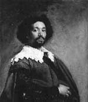

Diego Velazquez (1599-1660), resim sanatında renk ve ışığı kullanmanın yeni yollarını geliştirmiştir. Köylülerin, Papaların ve İspanya kraliyet ailesinin çarpıcı portrelerini yapmıştır. Avrupa sanatının 17 yy’da başlayıp 18. yy’a kadar süren Barok dönemindeki en etkili figürlerden biri olarak kabul edilmektedir.

Velazquez’in en önemli çalışmaları arasında The Water Carrier of Seville (Seville’in Su Taşıyıcısı) (1619), Papa 10. İnnocent’in portresi (1650) ve 1566’da tamamladığı, İspanyol bir prenses ile nedimelerini resmeden devasa tablo Las Meninas (Onur Hizmetçileri) bulunmaktadır.
Seville’de doğan Velazquez, 11 yaşındayken sanat okuluna gitmiştir. Aralarında Su Taşıyıcısı’nın da bulunduğu pek çok ünlü çalışmasını henüz yirmi yaşına gelmeden tamamlamıştır. Resimleri Madrit’teki resmi görevlilerin dikkatini çekmiş ve 1622 yılında Kral 4. Philip’in (1605-1665) sarayına davet edilmiştir.
Amerika ve Avrupa’daki emperyal gücünün doruğuna ulaşan İspanyol Kralı 4. Philip, genç sanatçıya ömür boyu destek olmuştur. Velazquez kralın, müttefiklerinin ve ailesinin yüzlerce resmini çizmiştir. Bu eserlerin sanatsal açıdan doruk noktası ise Onur Hizmetçileri’dir.
Madrit’deki Prado Müzesi’nde sergilenmekte olan Onur Hizmetçileri pek çok eleştirmen tarafından Velasques’in başyapıtı olarak değerlendirilmektedir. Karmaşık ve enigmatik olan çizimi, prensesi babası kralla birlikte loş bir odadaki açık kapıdan dışarı bakarken göstermektedir. Velasques’in gölgesi de resmin köşesindeki gölgelerin arasında yer almaktadır. Elinde fırçası vardır, ancak prensesi mi yoksa başka bir nesneyi mi çizdiği tam olarak anlaşılamamaktadır. Işığın ve gölgelerin resimde ayrıntılı bir biçimde kullanımı Barok döneme özgü bir karakteristik olarak kabul edilmektedir.
Velasques şairlerin, devlet görevlilerinin ve dönemin dini kişiliklerinin de resimlerini yapmıştır. İki kez İtalya’ya seyahat etmiş ve Flaman ressam Peter Paul Rubens (1577-1640) ile arkadaş olmuştur. Velasques altmış bir yaşında ölmeden önce şövalye ilan edilmiştir.
Ek Bilgiler
1- “Onur Hizmetçileri”ndeki ana figür Prenses Margarita’dır (1651–1673). 4. Philip’in en küçük kızı olan Margarita, Kutsal Roma İmparatoru 1. Leopold (1640-1705) ile evlenmiştir. Evlendiği sırada on beş yaşındaydı. Birkaç kez düşük yaptıktan sonra yirmi bir yaşında hayatını kaybetmiştir.
2- Velasques, hamisi 4. Philip’in kırktan fazla portresini yapmıştır.
3- “Barok” terimi İspanyolca ve Portekizce’de düzensiz ve buruşuk anlamına gelen bir kelimeden türetilmiştir. Dönemin sanat anlayışı detaycıydı. Daha önceki kuşaklarda görülen katı gerçekçilik bu dönemde görülmez. Bu dönemin gelişimi, Karşı Devrim’in hüküm sürdüğü 17. yy Avrupası’nda Katolik Kilisesi’nin gücünü toplayıp bu tarzda eserler veren sanatçıları desteklemesi ile bağlantırılmaktadır.